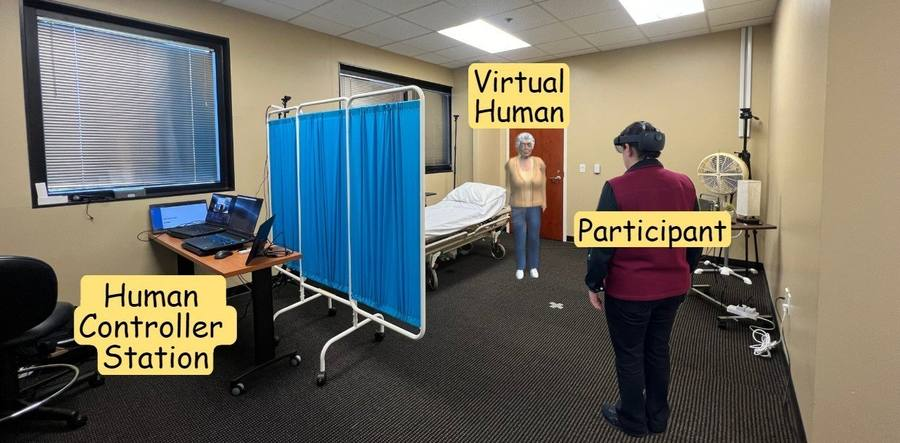
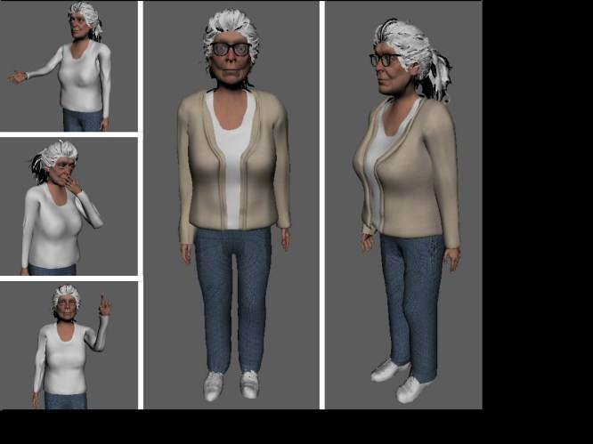
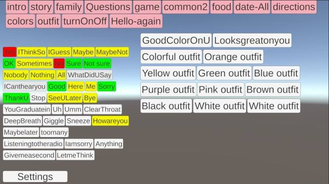
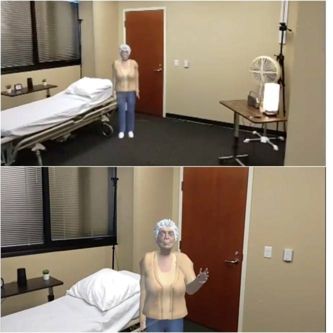

Research · NSF FW-HTF · 2022–present
Embodied Virtual Human Simulation for Caregiver Training
Supported by the U.S. National Science Foundation, Future of Work at the Human-Technology Frontier, awards #2222661 / #2222662 / #2222663. Six peer-reviewed papers to date.
A life-sized older woman stands by the bed in a HoloLens. She knows the caregiver’s name, notices the colour of their scrubs, and asks them to switch the lamp off. The project runs from the interviews that decided what she should say, through building her, to measuring what changes in the people who train with her.
At a glance
- Peer-reviewed papers6IEEE ISMAR, IEEE VR, ACM IVA, ICQE ×3
- NSF awards3FW-HTF collaborative research
- Universities3NJIT · UCF · Delaware
- PlatformHoloLens 2Unity 3D, C#, MRTK
Why the project exists
The figures the papers open with.
- >33%Turnover in geriatric care…
- up to 70%…and in skilled nursing facilities
- 67MPeople over 60 currently needing care
- 34.2%Growth in the US population aged 65+ over a decade
Two of the most commonly named causes of that turnover are a lack of communication skills and inadequate training. Mannequins can simulate a body; they cannot hold a conversation, and hired actors are hard to schedule and harder to keep in character. That gap is what the simulation is for.
How she works
One Unity 3D framework, four moving parts. Full detail lives on the individual paper pages.
The character
An older woman modelled, textured and rigged in Autodesk Maya: 778,092 vertices, a 67-joint skeleton, and blend shapes for thirteen viseme groups and a set of expressions.
A hidden operator
Wizard-of-Oz: a human controller listens from behind a room divider and picks each reply from categorised button panels built automatically out of a spreadsheet.
Voice, face and body together
A custom Unity plugin over the SALSA LipSync suite fires lip sync, facial expression and body gesture in step with the chosen audio clip.
The illusion of awareness
She greets people by name, comments on what they are wearing, recalls the earlier conversation, and switches a lamp and a radio on and off.
- 778,092Vertices
- 719,428Faces
- 67Skeleton joints
- 2048×2048Skin textures
- 13Viseme groups
- TCP socketsHoloLens as server, PC as client
How the project unfolded
Each step is a paper; the arc is need-finding, then building, then three different ways of asking whether it worked.
- 2022
Joined as student team lead
The NSF FW-HTF collaboration between NJIT, the University of Central Florida and the University of Delaware begins.
- Before any code
Ten professional caregivers interviewed
Hour-long semi-structured interviews, 31 open questions, transcribed and coded, and deliberately run before the training content was written.
- Mar 2024
The system demonstrated at IEEE VR
A two-page demo paper covering the model, the animation rig, the operator interface and the TCP link, with a feasibility pilot of 20 professional caregivers.
- Sep 2024
Empathy and social presence measured at ACM IVA
Sixteen nursing participants met an unaware agent, then an aware one, with psychometric instruments either side.
- Oct 2024
Usability and acceptance measured at IEEE ISMAR
The same cohort rated the system 78.4 on the System Usability Scale and 89.1% on perceived ease of use; every participant completed every task.
- 2024
The interview data modelled as networks at ICQE
Epistemic Network Analysis on the ten interviews found the empathy gap that the next round of scenarios was designed to close.
- 2026
Discourse inside the simulation analysed at ICQE
3,710 transcript lines through ENA, Ordered Network Analysis and CORDTRA, comparing the aware and unaware conditions directly.
- Oct 2026
SimPathy at BehavXR, IEEE ISMAR
Simulation design and evaluation of an aware embodied patient for caregivers’ soft-skills training, to be presented in Bari.
What the studies established together
Four independent lines of evidence, none of which depends on the others.
- Usable
78.4 on the System Usability Scale
Against an established average of 68 (one-sample Wilcoxon signed-rank, p < 0.006). Three quarters of participants placed it above average, and all sixteen completed the tasks.
- Accepted
89.1% on perceived ease of use
28.5 of a possible 32 on the Technology Acceptance Model. Every participant complied when the virtual human asked them to switch off a lamp and to play a game.
- It changes behaviour
More person-centred care when she notices you
With an aware patient, caregiving competencies clustered around Person-Centered Care and Patient Vulnerability Disclosure rather than professional protocol. Cohen’s d = 2.12.
- It changes engagement
More interactions, more strategic reasoning
Participants triggered more exchanges per minute in the aware condition, and moved from trial-and-error questioning to strategic questioning that got confirmed.
- It closes a real gap
Training under-weights empathy
The interview networks showed communication running on empathy in real caregiving and on critical thinking in formal training. That is the finding that shaped the scenarios.
- People preferred it
Better than the mannequins, in their words
Two nursing students rated the interaction above their mannequin simulation classes; the asks were for mobility, a wider response range, and no speech overlap.
The papers
- 2025ICQE · Springer
A Quantitative Ethnographic Analysis of Caregiver Competencies and Engagement in Augmented Reality Geriatric Simulation
Three analyses of 3,710 transcript lines: awareness made care more person-centred, reasoning more strategic, engagement higher.
Read the summary → - 2024IEEE ISMAR
System Usability and Technology Acceptance of a Geriatric Embodied Virtual Human Simulation in Augmented Reality
Sixteen caregivers rated the simulation 78.4 on the System Usability Scale against a benchmark of 68, and 89.1% on perceived ease of use.
Read the summary → - 2024ACM IVA
Aware Intelligent Virtual Agent’s Effect on Social Presence and Empathy of Caregivers
Empathy and sense of social presence both rose after caregivers met the unaware and then the aware agent.
Read the summary → - 2024IEEE VRW
Simulation of an Aware Geriatric Virtual Human in Mixed Reality
The demo paper: how the virtual human is modelled, animated and driven by a hidden operator over a TCP link.
Read the summary → - 2024ICQE · Springer
Analyzing Nursing Assistant Attitudes Towards Geriatric Caregiving Using Epistemic Network Analysis
Ten interviews mapped as networks: on the job, communication runs on empathy; in training, it runs on critical thinking.
Read the summary →
Two further outputs have no summary page yet: SimPathy (BehavXR at IEEE ISMAR 2026, accepted, to be presented in October) and a 2023 ICQE conference-proceedings supplement abstract. Both are listed on the publications page.
The simulation, in pictures




Funding
Supported by the National Science Foundation
This work is supported by the U.S. National Science Foundation under the Future of Work at the Human-Technology Frontier (FW-HTF) program, awards #2222661, #2222662 and #2222663, a collaboration between the New Jersey Institute of Technology, the University of Central Florida and the University of Delaware.
Open-access copies of the NSF-funded papers are deposited in the NSF Public Access Repository and linked from each paper page.